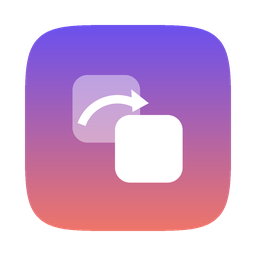
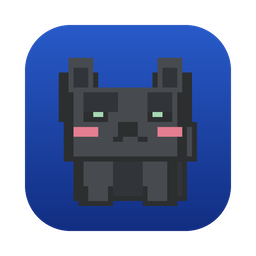
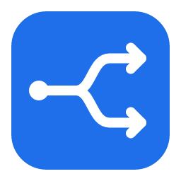

Swap Your Icon
macOS · Windows · Tauri
给 Mac 和 Windows 上的应用换图标：选应用、拖入图片、点「应用」，三步完成。
Change app icons on macOS and Windows: pick an app, drop in an image, click Apply.
- 一键还原，改之前自动备份原图标
- 应用更新后图标被冲掉，会在后台自动重新套用
- 按文件夹批量替换，可以保存成主题分享给别人
- One-click restore — originals are backed up before every change
- Re-applies your icons automatically after apps update
- Batch apply from a folder, and save sets as shareable themes

Clash for Young
macOS · Windows · mihomo
新手也能自己装好、用好的代理客户端：粘贴订阅、点小猫连接，再给每个网站选走哪个地区。
A proxy client beginners can set up alone: paste a subscription, tap the cat to connect, choose a region per website.
按网站分流Per-site routing增强模式TUN mode导出手机配置Mobile export
Clash for Research
macOS · Windows
Clash for Young 的科研版：查文献、下数据、写论文更顺手。
The research edition of Clash for Young, tuned for literature search, data downloads and writing.
学术网站预设Academic presets校园网开关Campus switch终端代理Terminal proxy

分流检查Proxy Routing
macOS · Windows · Tauri
输入网址，看它命中了哪条规则、走哪个节点、出口 IP 和延迟，还能直接切换节点。配合 Karing 和 Clash Verge Rev 使用。
Enter a URL to see which rule it hits, which node it uses, its exit IP and latency — and switch nodes on the spot. Works with Karing and Clash Verge Rev.
Pixel Pet
macOS (Swift) · Windows
住在桌面上的像素宠物，六种形象：灰猫、柯基、饼干仓鼠……拖到屏幕下边缘它会趴下睡觉，还会偷瞄你。
A pixel pet that lives on your desktop, in six characters. Drag it to the bottom edge and it curls up to sleep — or peeks at you.